Compiling FsSimpleWindow framework program in Visual Studio 2010 Express
Edition
I see little point of using Visual Studio IDE. I can do almost
everything from a makefile. Rather, using it may be a waste of time
because Microsoft changes the interface once every a few years and forces you to
re-learn how to do the same thing. It is a total waste of your time.
If you are paid for hours, that's not a bad thing for you. But, if you are
paid for what you make, you don't want to go along with Microsoft's freak.
I have been doing most of my development work with a makefile and nmake.exe,
and I didn't have to change much settings since Visual C++ 6.0. Of course
I did some, but not much. I am using same command prompt and my favorite
editor from which I can run nmake.exe.
So, I suggest you to learn to compile from command prompt, but until then,
you can go with the following instructions.
Step 1 Start Microsoft Visual Studio 2010 Express Edition IDE
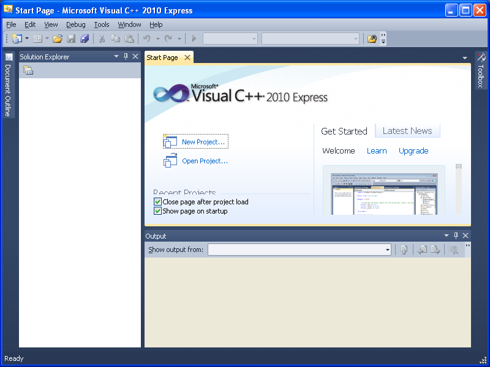
Step 2 Select File -> New -> Project
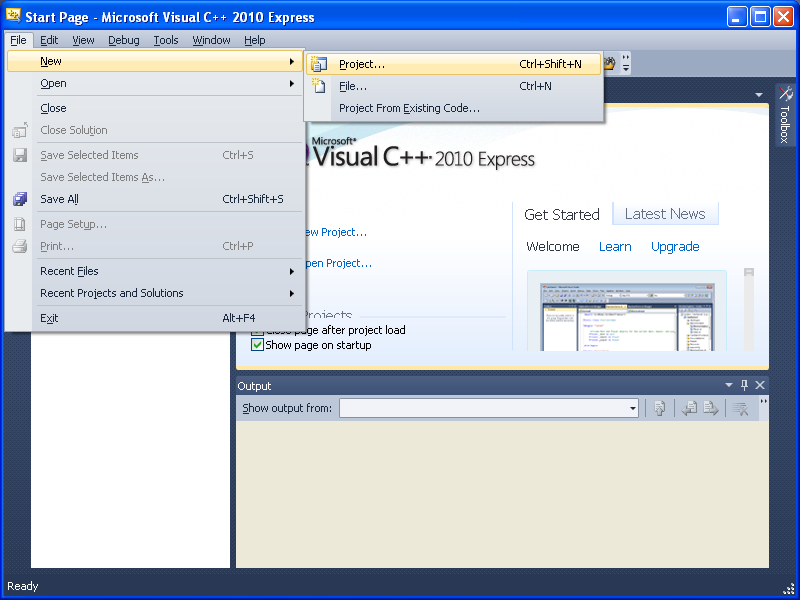
Step 3 Select "Win32" -> "Win32 Console Application"
Step 4 Select location (In this case "C:/Projects"), and name (in this
example "sampleProject"), and make sure "Create directory for solution" is ON,
and click "OK"
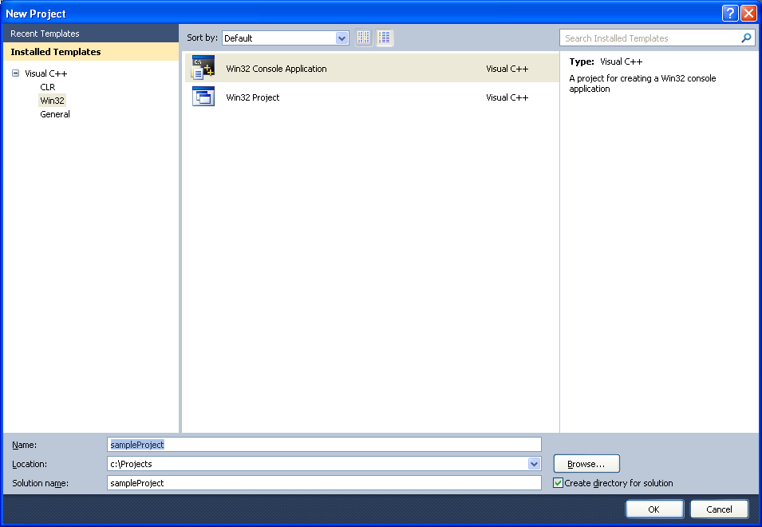
Step 5 In Win32 Application Wizard, Click "Next"
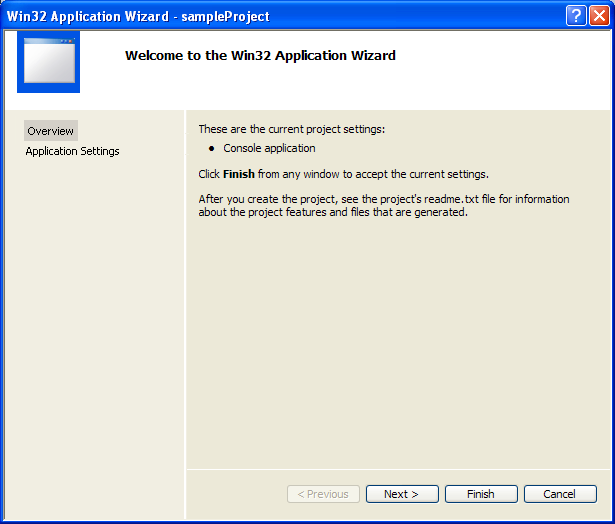
Step 6 CHECK "Empty Project" and click "Finish". Another thing of
Visual Studio that freaks me out is its nosy default files. Let's start
with an empty project.
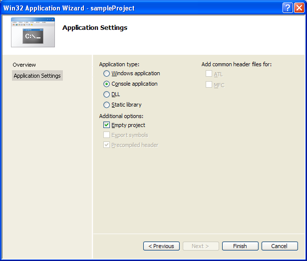
Step 7 Project opens up
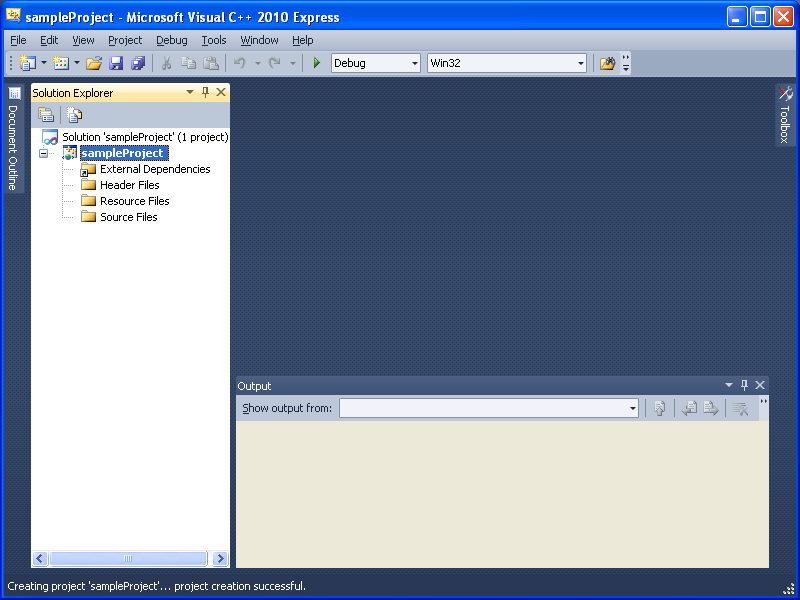
Step 8 Select "Project" -> "Settings"
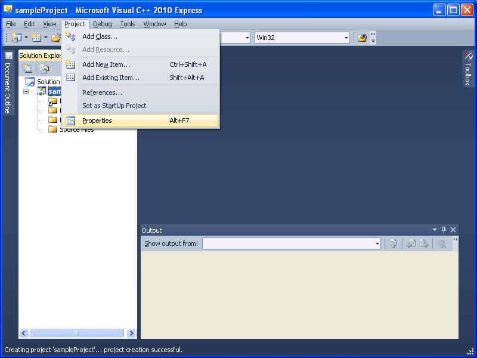
Step 9 From "Configuration", select "All Configurations"
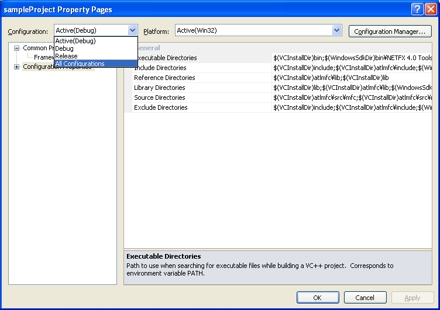
Step 10 In "Configuration Properties", select "VC++ Directories", and add
the following.
;C:\Projects\fssimplewindow\src;C:\Projects\ysbitmapfont\src
I am assuming you extracted fssimplewindow and ysbitmapfont in
"C:\Projects". Directory names must be changed according to the location
you extracted the files. Directories must be separated by a semi-colon
(;).
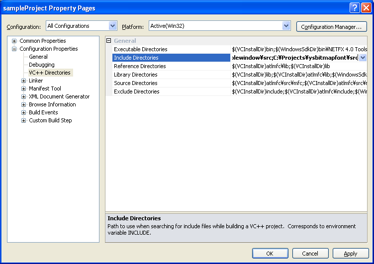
Step 11 Click "OK"
Step 12 Select "Project" -> "Add Existing Item"
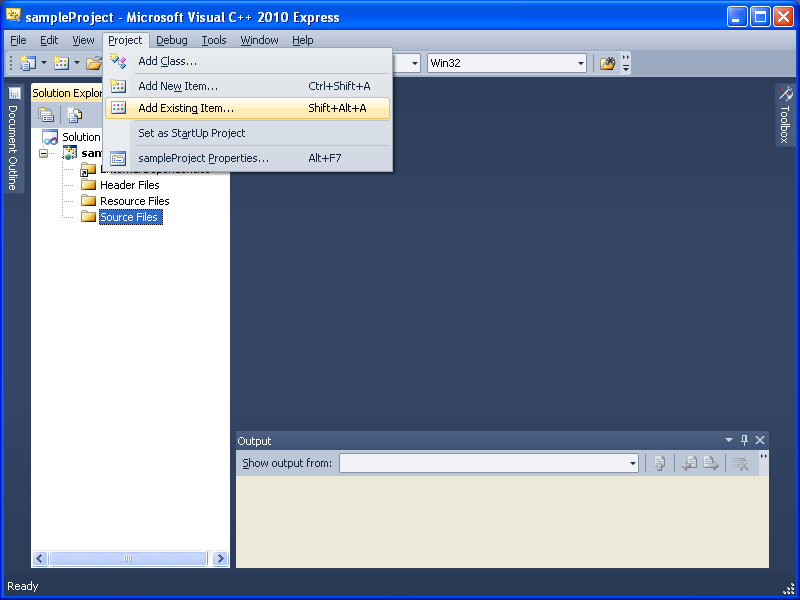
Step 13 Goto "C:\Projects\fssimplewindow\src\windows" and select
"fswin32keymap.cpp", "fswin32winmain.cpp", and "fswin32wrapper.cpp", and click
"Add".
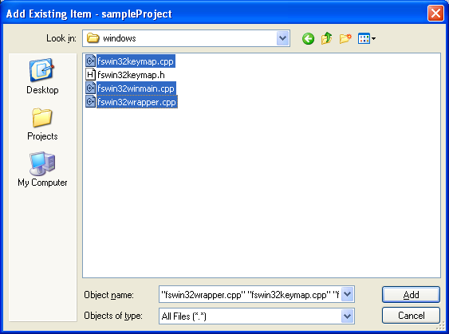
Step 14 Select "Project" -> "Add Existing Item" (same as Step 12)
Step 15 Go to "C:\Projects\ysbitmapfont\src" and select "ysglfontdata.c", "ysglmaketextbitmap.c",
and "ysglusefontbitmap.c", and click "Add"
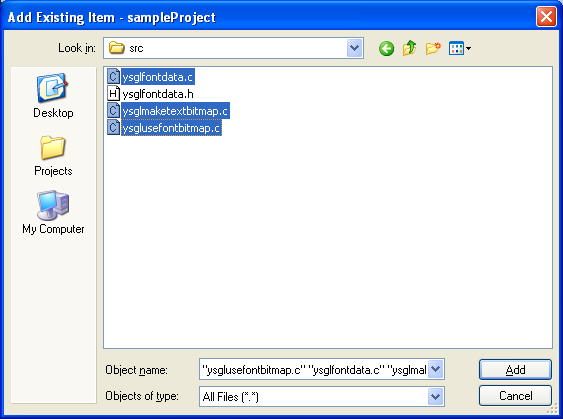
Step 16 Select "Project" -> "Add New Item"
Step 17 Select "C++ File (.cpp)" and type file name and click "Add"
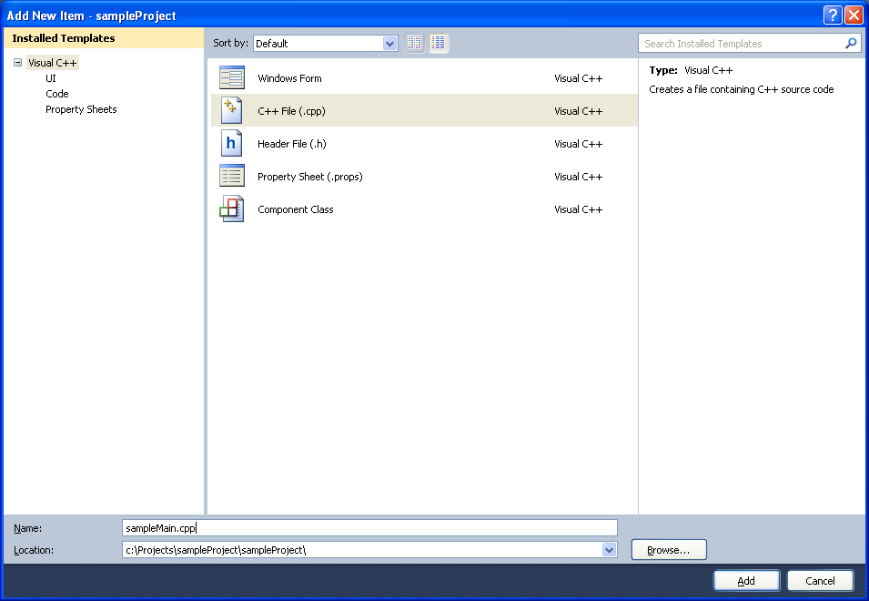
Step 18 Write your program.
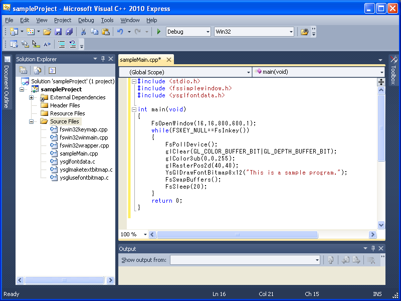
Step 19 Press Ctrl + F5 and click "Yes"
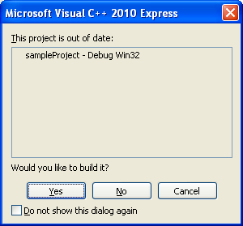
Step 20 then your program starts. This program shows a message "This
is a sample program." and closes when you press a key.
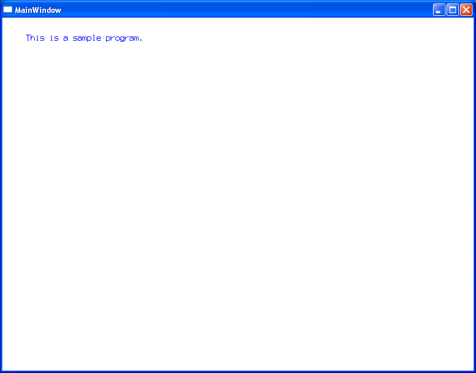